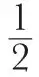
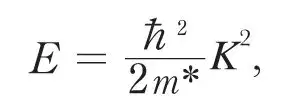
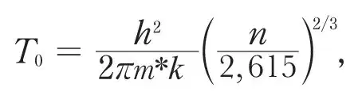
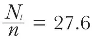
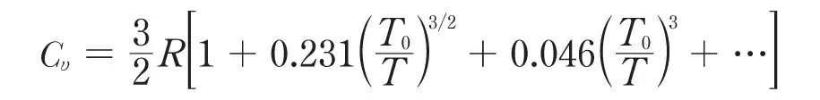
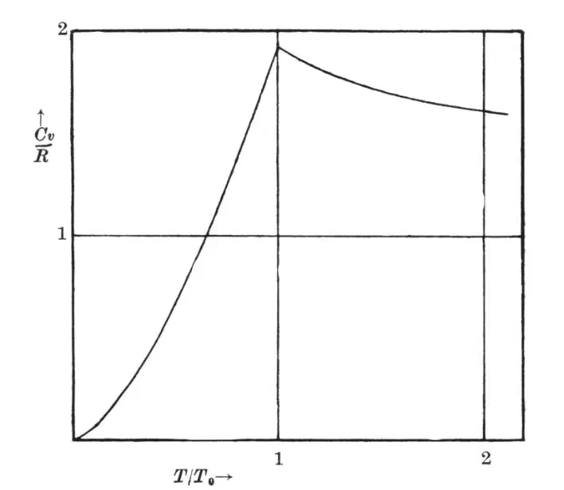

中文
中文F. London
Editor’s Note
In early 1938, Nature published the first reports of superfluidity in liquid helium, discovered independently by Pyotr Kapitza in Russia and by John Allen and Don Misener at Cambridge. Both reported that when cooled below 2.17 K, the viscosity of the liquid plunged apparently to zero. One proposed explanation was that the helium atoms adopted an ordered structure like that of diamond crystals. Here Fritz London proposes a radically different idea: that the phenomenon might be linked to the low-temperature quantum behaviour of particles of integer spin (“bosons”), whose collective statistical behaviour had been described by Bose and Einstein. 中文
IN a recent paper1 Fröhlich has tried to interpret the λ-phenomenon of liquid helium as an order–disorder transition between n holes and n helium atoms in a body-centred cubic lattice of 2n places. He remarks that a body-centred cubic lattice may be considered as consisting of two shifted diamond lattices, and he assumes that below the λ-point the helium atoms prefer the places of one of the two diamond lattices. The transition is treated on the lines of the Bragg–Williams–Bethe theory as a phase transition of second order in close analogy to the transition observed with β-brass. Jones and Allen in a recent communication to Nature2 also referred to this idea. In both these papers, use is made of the fact, established by the present author, that with the absorbed abnormally great molecular volume of liquid helium (caused by the zero motion3) the diamond-configuration has the lowest potential energy among all regular lattice structures4. 中文
In this note, I should like first to show that the mechanism proposed by Fröhlich cannot be maintained and then to direct attention to an entirely different interpretation of this strange phenomenon. 中文
(1) According to Fröhlich, a diamond lattice of He atoms, when partly formed, should offer, to any other He atom, a preference for being attached at those points which belong to the same diamond lattice, that is, the binding energy at a diamond point should be greater than anywhere else. It is, however, easy to see that just those points, which according to Fröhlich should become less favoured for low temperatures, have an appreciably greater binding energy. It is true these holes have four nearest neighbours at exactly the same distance (3.08 A.), as the lattice points of the diamond lattice have, but in addition they possess six second neighbours at the distance of 3.57 A. which the diamond lattice points do not possess, and these second neighbours contribute considerably to the binding energy just at the hole-places (about 50 percent to the potential energy). Therefore, actually no such co-operative phenomenon will appear as supposed by Fröhlich. The atoms would rather frequent the holes as much as the proper diamond lattice points, and this would signify that we have a body-centred lattice of 2n places for n atoms, every place being occupied with the probability

only—even at the absolute zero. In this configuration every atom has on the average four nearest neighbours at a distance of 3.08 A, as in the diamond configuration, but in addition there are here on the average three second neighbours at the distance of 3.57 A. In the diamond lattice there are twelve second neighbours but at a distance of 5.04 A., where there is almost no Van der Waals field. It might be mentioned, by the way, that a face-centred lattice of 2n places for n atoms (on the average 6 first neighbours at a distance of 3.17 A.) has been found to have a still little lower energy than the configuration just discussed of the co-ordination number 4. 中文
Complete numerical details cannot be given here; in any event it can be shown by such energetic discussions that a static spatial model of liquid He Ⅱ of whatever regular configuration is certainly not possible. This has been previously suggested in consideration of the great zero point amplitude calculated for He4. The determination of the most favourable co-ordination numbers of the first and second neighbours, however, maintains a good physical meaning: it may be considered as a rough Hartree calculus which yields the self-consistent field and the corresponding probability distribution of the atoms belonging to the minimum of energy. 中文
(2) It seems, therefore, reasonable to imagine a model in which each He atom moves in a self-consistent periodic field formed by the other atoms. The different states of the atoms may be described by eigen functions of a similar type to the electronic eigen functions which appear in Bloch’s theory of metals; and, as in Bloch’s theory, the energy of the lowest states will roughly be represented by a quadratic function of the wave number K,

the effective mass m* being of the order of magnitude of the mass of the atoms. But in the present case we are obliged to apply Bose–Einstein statistics instead of Fermi statistics. 中文
(3) In his well-known papers, Einstein has already discussed a peculiar condensation phenomenon of the “Bose–Einstein” gas; but in the course of time the degeneracy of the Bose–Einstein gas has rather got the reputation of having only a purely imaginary existence. Thus it is perhaps not generally known that this condensation phenomenon actually represents a discontinuity of the derivative of the specific heat (phase transition of third order). In the accompanying figure the specific heat (Cυ) of an ideal Bose–Einstein gas is represented as a function of T/T0 where

With m* = the mass of a He atom and with the mol. volume

cm.3 one obtains T0 = 3.09°. For T ≤ T0 the specific heat is given byCυ = 1.92 R(T/T0)3/2
and for T ≥ T0 by

The entropy at the transition point T0 amounts to 1.28 R independently of T0. 中文

Specific heat of an ideal Bose–Einstein gas. 中文
(4) Though actually the λ-point of helium resembles rather a phase transition of second order, it seems difficult not to imagine a connexion with the condensation phenomenon of the Bose–Einstein statistics. The experimental values of the temperature of the λ-point (2.19°) and of its entropy (~0.8 R) seem to be in favour of this conception. On the other hand, it is obvious that a model which is so far away from reality that it simplifies liquid helium to an ideal gas, cannot, for high temperatures, yield but the value Cυ= 3/2 R, and also for low temperatures the ideal Bose–Einstein gas must, of course, give too great a specific heat, since it does not account for the gradual “freezing in” of the Debye frequencies. 中文
According to our conception the quantum states of liquid helium would have to correspond, so to speak, to both the states of the electrons and to the Debye vibrational states of the lattice in the theory of metals. It would, of course, be necessary to incorporate this feature into the theory before it can be expected to furnish quantitative insight into the properties of liquid helium. 中文
The conception here proposed might also throw a light on the peculiar transport phenomena observed with HeⅡ (enormous conductivity of heat5, extremely small viscosity6 and also the strange fountain phenomenon recently discovered by Allen and Jones2). 中文
A detailed discussion of these questions will be published in the Journal de Physique. 中文
(141, 643-644; 1938)
F. London: Institut Henri Poincaré, Paris, March 5.
References:
1. Fröhlich, H., Physica, 4, 639 (1937).
2. Allen, J. F., and Jones, H., Nature, 141, 243 (1938).
3. Simon, F., Nature, 133, 529 (1934).
4. London, F., Proc. Roy. Soc., A, 153, 576 (1936).
5. Rollin, Physica, 2, 557 (1935); Keesom, W. H., and Keesom, H. P. Physica, 3, 359 (1936); Allen, J. F., Peierls, R., and Zaki Uddin, M., Nature, 140, 62 (1937).
6. Burton, E. F., Nature, 135, 265 (1935); Kapitza, P., Nature, 141, 74 (1938); Allen, J. F. and Misener, A. D., Nature, 141, 75 (1938).